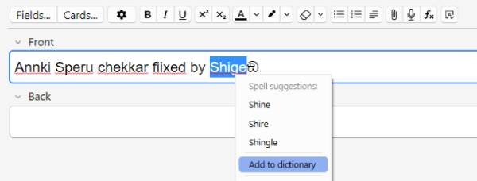
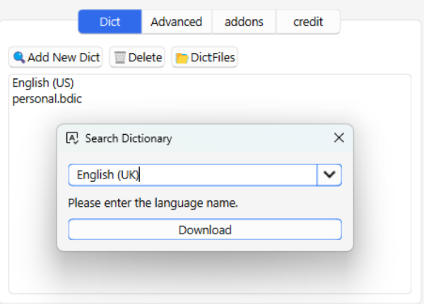
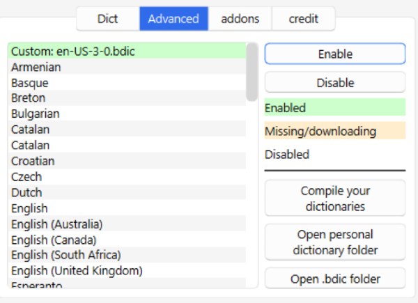
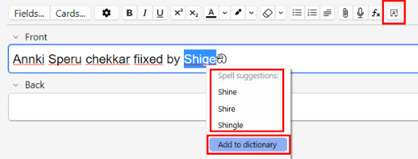

✅️Anki Spell Checker

Add spell check functionality to Anki by downloading dictionaries (Editor Only). This add-on is a fixed and customized version of SpellingPolice by lovac42 and Spell Checker by Valentin, and credit goes to them.
📖How to use
This add-on needs to download a dictionary before you can use it. Click on "🔍️Add New Dict" to find available dictionaries. Menu -> Tools -> Spell Checker
Dict tab
Basically the spell checker should work with just this tab. It supports Windows, Linux, and Mac.

- Add New Dict: Download downloads available dictionaries.
- Delete: Deletes a dictionary that has already been downloaded.
- Dict Files: Open the folder where the dictionaries are located.
Note:
- Basically the spell checker should work just by downloading.
- These dictionaries are for spell checking only, so they cannot be used as learning dictionaries.
- Downloading similar languages may interfere.
- If you cannot find a language it is not, please send me a request.
Advanced tab
This tab has the same features as the original spell checker. For now it supports Windows and Linux, Mac support is still under development. (This tab is not essential so if you are not sure how to use it feel free to ignore it.)

For detailed instructions on how to use this tab please read the original Add-on page.
- How to use: Spell Checker by Valentin
Q. What is the difference between the Dict tab and the Advanced tab?
- A. To use the spell checker in Anki, you need a dictionary file named “.bdic”. The Dict tab is used by downloading the complete “.bdic” file from the website. The Advanced tab allows you to generate your own “.bdic” file from the dictionary data. The code required for this generation is still available only for Windows and Linux, so it is not yet available for Mac. (It is under development, please wait.)
Q. What is the advantage of creating my own dictionary?
- A. You can add new words. And you can create and add your own dictionaries that are not available in the download.
Note: This compile function is relatively fragile, if it does not work well please contact me.
Editor
This add-on only works in the Editor for now. Spell check is only available for the field you are typing in.

- Click the top right button to enable or disable SpellChecker.
- Right click on a spell checked word to see the suggested words, and click on it to replace it with the correct word.
- Spell checked words can be added to a custom dictionary as correct words. This feature is only available on Windows and Linux, not yet on Macx. Added words can be edited in the advanced tab.
🚨Report
If you have any problems or requests feel free to send them to me.
- 👩🚀Reddit : You can request me to repair broken Add-ons.
- 🌟AnkiForums : You can request me to repair broken Add-ons, and it is ideal for open discussions.
- 🐙Github : Makes it easier to track problems.
- 💖Patreon DM : Response will be prioritized.